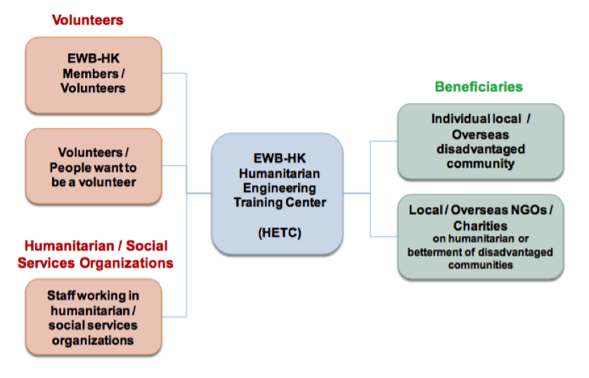
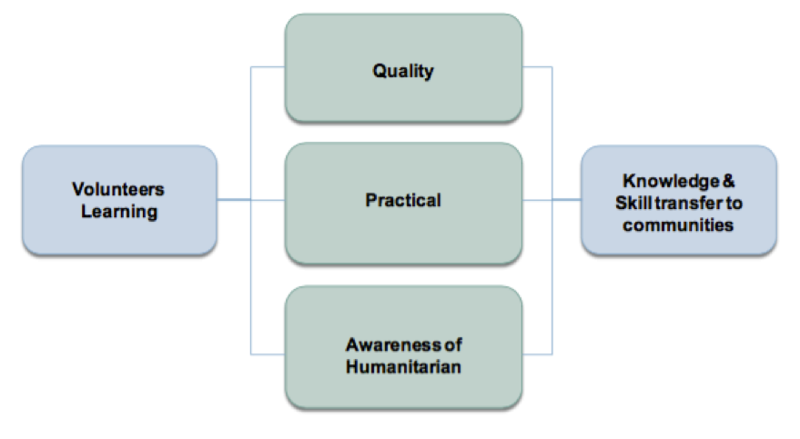

SECTION 7: HUMANITARIAN ENGINEERING TRAINING COMMITTEE
7.1 Description and General Information
The Humanitarian Engineering Training Committee (HETC) was officially formed in February 2017. Its missions are to accelerate betterment in life of disadvantaged communities and provide sustainable development, through people-oriented and strength-based training approaches. These are in line with the missions of EWB-HK.
The vision of HETC is to establish a humanitarian engineering resources (manpower and knowledge) hub in Hong Kong and serving nearby regions, such that the trained volunteers (not necessarily with technical background) can be equipped with basic service and technical skills, and then serve local and overseas NGOs / communities with humanitarian and social related services.
7.2. Objectives
- Conduct trainings that align with the missions of HETC and address the aspects rendered in the United Nations’ Sustainable Development Goals;
- Foster the capacity building on humanitarian engineering in humanitarian and community services related NGOs;
- Enhance the technical and non-technical competence of volunteers, that in turn with benefits to the projects managed by EWB-HK and other NGOs;
- Create a knowledge and skill learning, sharing and transfer culture in EWB-HK;
- Promote stakeholders collaborations in training course development and for relevant resources supports;
- Manage training programs in financially sustainable basis;
7.3. Core Values
7.4 Committee Structure
Humanitarian Engineering Training Committee (HETC) is led by a Committee Chairman. This position is appointed directly by EWB-HK Board of Directors. The appointment remains effective until Chairman resigns or is replaced by the Board of Directors, via written notification.
Committee Chairman determines the composition of the Committee and the Committee Members. Among these he/she may appoint a Committee Secretary and a Treasurer.
Roles of these position are defined as following:
Chairman
1. Overall leadership of the Committee
2. Develop and maintain Committee Annual Plan
3. Supervise overall operations to fulfil missions and objectives of the Committee
Secretary
1. Convene Committee meetings
2. Maintain and update Committee Member list, CV of instructors,trainers, advisors, etc.
3. General Secretarial work
4. Ensure compliance to the Personal Data (Privacy) Ordinance
Treasurer
1. Keeping full and accurate records of all financial transactions for the Committee
2. Present a full financial report in EWB-HK Annual General Meeting
3. Manage sponsorship and donations
4. Effect payments on behalf of the committee
The updated HETC Committee Members List with relative functions is in Appendix 7.4.1